No experience necessary
You're about to build real software.
By the end of this course you will have a working program on the internet, with a link you can send to anyone who doubts you.
The arrangement
You are learning to direct something that codes.
Three terms you will hear constantly
VS Code
A free application that holds your project's files. Consider it your workshop.
Claude Code
The AI that works inside VS Code. You describe, it writes the files.
Terminal
A window for typing commands instead of clicking. You may ignore it.
On the phrase "vibe coding"
You will not be writing the code. You describe what you want in your own words, the AI writes it, and you say what to change. You are not required to read the code, but you are required to look at the result, and that distinction is the substance of this course.
The loop you will repeat forever
Every professional working with AI runs this same cycle, including the ones with fifteen years of experience behind them.
Ask
"Make a page with three colourful boxes."
Look
Open it. Click it. Does it work?
Correct
"Make the button green."
Repeat
And then you begin again.
The one way to do this badly
Skipping step two.
One setting before we start
A few instructions differ between Mac and Windows. Choose yours and the course will show you only that version.
One thing the switch cannot change: the screenshots were all taken on a Mac. On Windows the windows are shaped a little differently, but every button sits in the same place and carries the same name.
Your Claude account
(The only purchase this course requires.)
Claude Code requires a paid Claude plan. The free plan is conversation only. It will talk with you, but it cannot reach into your files and build things, which is precisely what we need it to do.
- Go to claude.ai and click Sign up.
- Once you are in, click your name at the bottom left, then Settings, then Plans.
- Choose Pro, which is $20 per month, or $17 if you pay for the year.
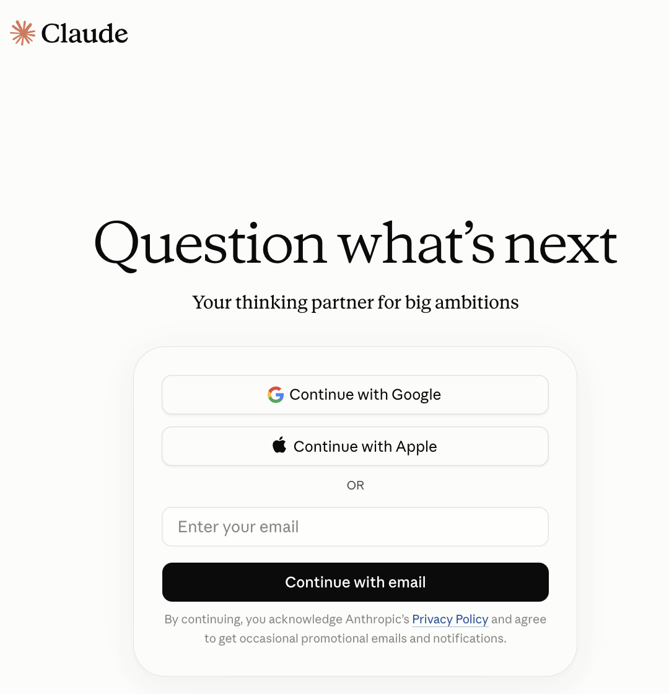
Where your money goes
One subscription covers Claude in the browser and Claude Code in VS Code. It is a single bill. The remaining tools in this course cost nothing at all.
Install VS Code
- Go to code.visualstudio.com/download.
- Click the button for your computer. The site usually guesses correctly.
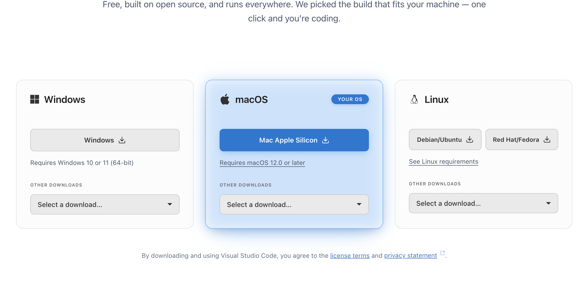
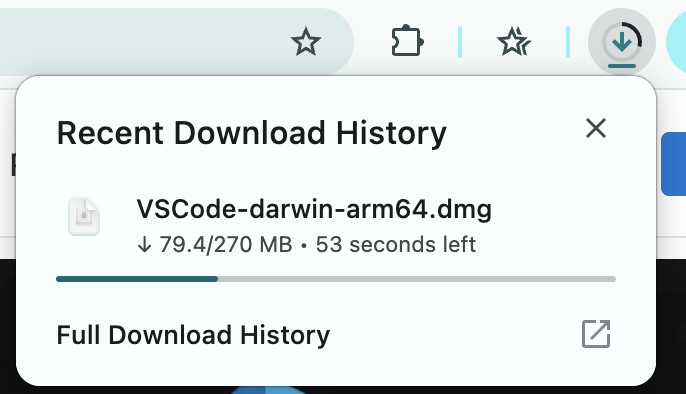
On Mac
- Double-click the downloaded
.dmg. A window opens with the blue Visual Studio Code icon inside it. - Drag that icon into Applications, then open it from there.
- When asked "downloaded from the internet, are you sure?", click Open.
On Windows
- Double-click the downloaded
.exe. - Accept the agreement, then click Next through every screen. The defaults are correct.
- Click Install, then Finish. VS Code opens itself.
You should see
A large window with a strip of icons down the far left. That strip is the Activity Bar. You will use about three of those buttons in this entire course, so pay no attention to the rest of the interface.
Add Claude Code
Installing the AI into your workshop.
An extension is an add-on for VS Code, much like an app on your phone. You are installing exactly one of them.
- Click the four squares icon on the far left. Or press ⌘+⇧+X.Or press Ctrl+Shift+X.
- Search for Claude Code.
- Choose the one published by Anthropic. Check the publisher, because there are imitations with near-identical names.
- Click Install.
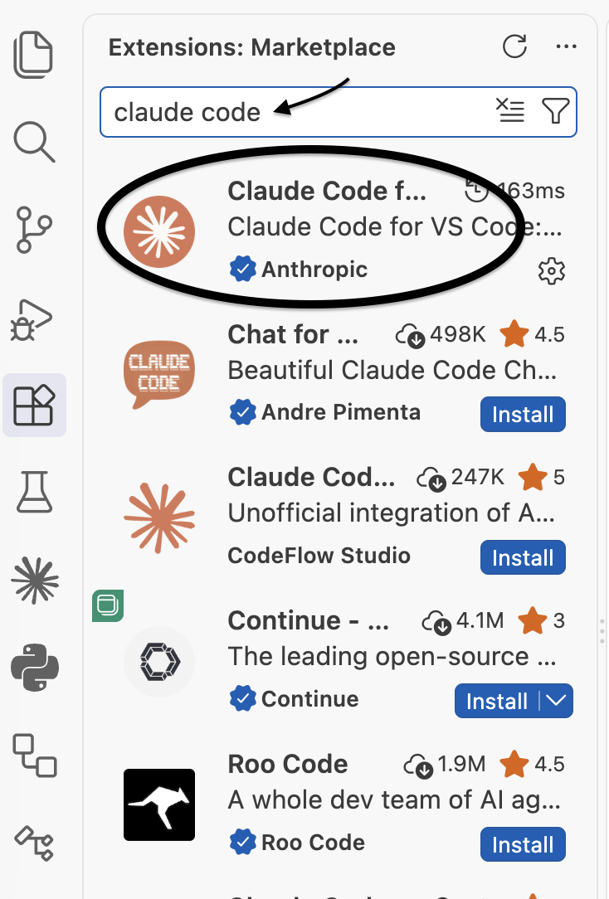
You should see
A new Spark icon, a small four-pointed star, appear in that left strip. Learn to spot it, because it means Claude everywhere you meet it.
If no star appears
Quit VS Code completely and reopen it. Failing that, press ⌘+⇧+PCtrl+Shift+P and run Developer: Reload Window. One of the two always resolves it.
Meet Claude
Sign in and find the chat box.
Signing in sends you out to your browser and back again. Here is the whole trip.
- Click the Spark star in the left strip, and a Claude panel opens.
- Click Claude.ai Subscription, the top option. The other two bill you per use through a Console account, which is not the plan you set up in Section 2.
- Your browser opens on the Claude sign-in page. Use the same account you set up in Section 2.
- If you signed in with an email address, Claude sends you a link. Click it reasonably promptly, because it stops working after ten minutes.
- Read what Claude Code is asking for, then click Authorize.
- Close the tab and return to VS Code.
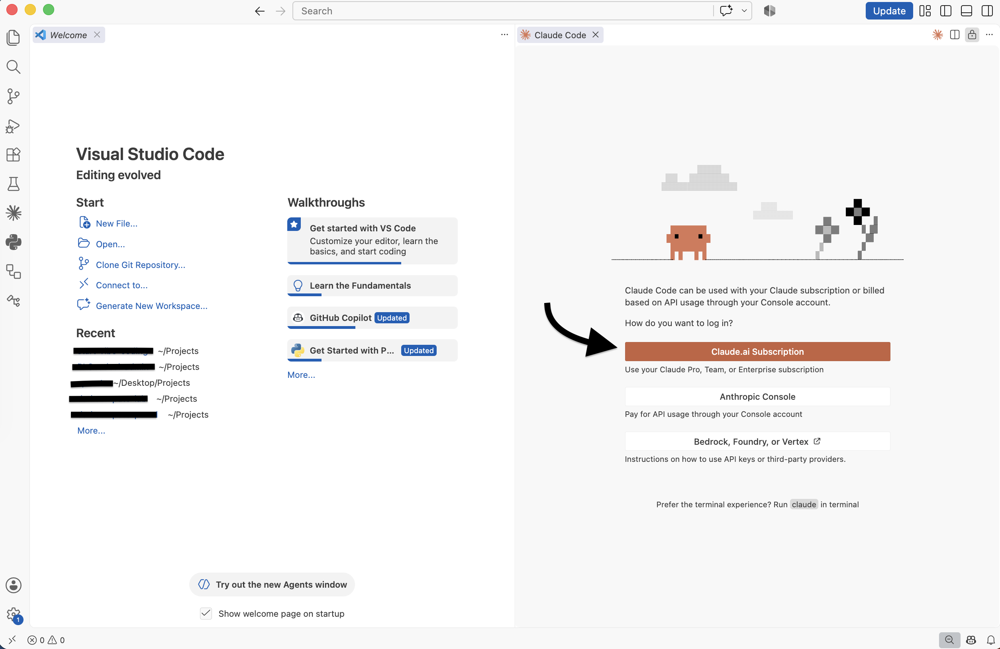
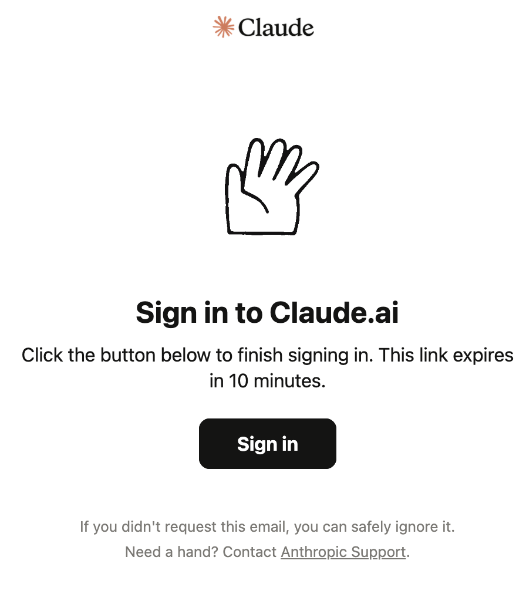
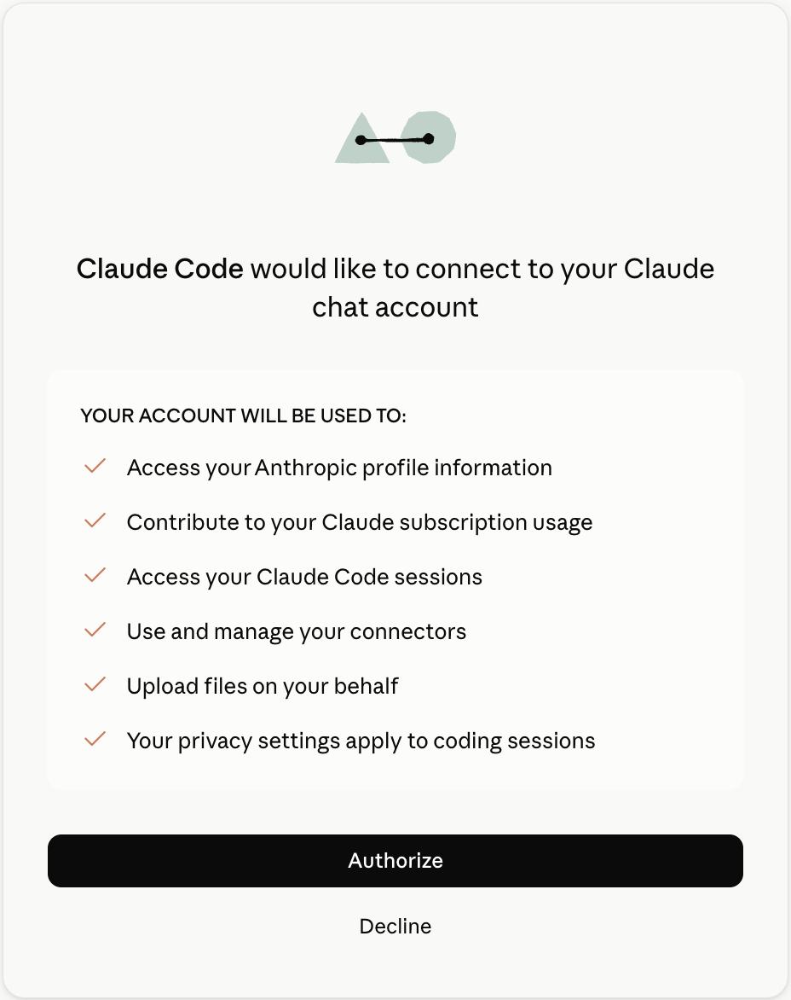
You only do this once. Claude stays signed in from now on.
You should see
A chat box waiting for you, plus a small Learn Claude Code checklist. That is the extension's own tour. Click through it or dismiss it with the ×, since this course covers the same ground.
The star also appears at the top right of the editor, but only once a file is open, so it will not be there yet. The one in the left strip always is.
If you cannot find it
- Press ⌘+⇧+P, type Claude, and pick an option such as "Open in New Tab". (⇧ is Shift.)
- Press Ctrl+Shift+P, type Claude, and pick an option such as "Open in New Tab".
- Still nothing? From the same box, run Developer: Reload Window. It resolves a surprising share of VS Code problems, so learn it now and save yourself the grief later.
The official tour
In that same command box, run Claude Code: Open Walkthrough. Two minutes, made by the people who built it.
Your first project folder
A box to work in, and quietly your safety net.
Every project you build lives in a folder. Claude only touches files inside the folder you have opened. This is not a rule you have to enforce, it is how the tool works.
- Open Finder and go to Documents.
- Right-click empty space and choose New Folder. Name it
test.
- Open File Explorer and go to Documents.
- Right-click empty space and choose New, then Folder. Name it
test.
Open it in VS Code
- From the top menu, choose File, then Open Folder…
- Select
testand click Open. - When asked whether you trust the authors, say yes. You made the folder yourself.
You should see
test in the top left with nothing underneath it. An empty folder is the correct outcome, and Section 7 fills it.
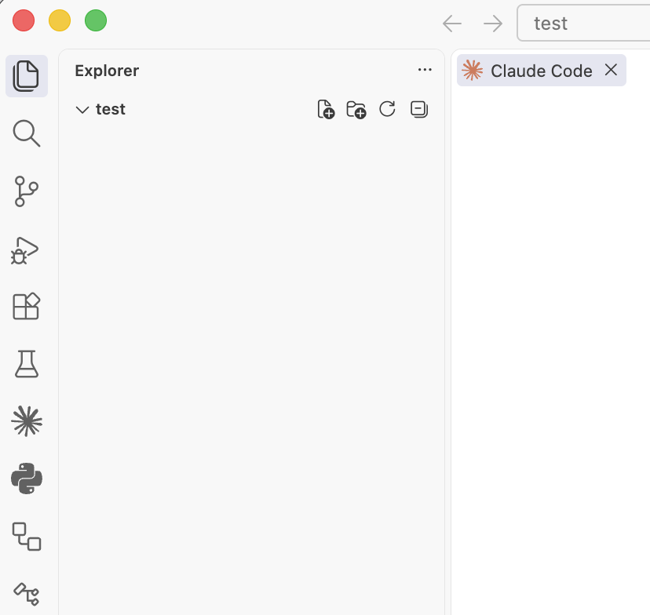
The naming rule
Lowercase, no spaces, hyphens between words.my-recipe-site yes My Recipe Site no
Spaces in folder names produce baffling errors months later, so spare yourself and avoid them from the start.
Your first build
Two messages. The first sets your terms, the second gives Claude a job.
Click a box to copy it, paste it into the Claude chat box, and press Enter. Message one first.
You should see
- Claude explains what it intends to do, and then does it.
- A file called
index.htmlappears on the left. - That file is yours. You have built something.
Set your terms once and they hold for the whole conversation.
It edits files without asking, and that is normal
At the bottom of the chat box there is a small word, and that word is the mode. On a Pro plan it begins on Auto, meaning Claude writes and edits files in your folder without pausing to ask each time.
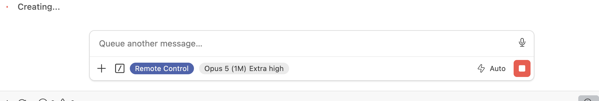
Clicking it opens the four choices. Plan is the one to reach for if Auto makes you uneasy, because Claude writes out what it intends to do and waits for your approval. Many people stay on Plan for the first week, since reading the plan before it happens teaches you a great deal.
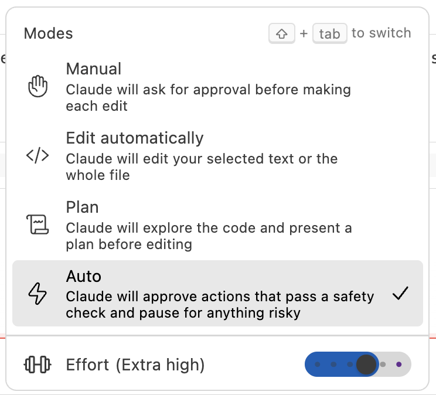
In every mode
Claude still stops and asks before anything consequential: deleting many files, reaching outside your folder, or installing software. If a request surprises you, type "why do you need that?" Nothing proceeds until you agree to it.
Look at it. Then change it.
The section most people skip, and the one that separates those who build things from those who nearly build things.
Section 1 described a loop: ask, look, correct, repeat. This is where you run it for the first time.
Ask
You did this in Section 7.
Look
Open it. Click it. Does it work?
Correct
Say what to change.
Repeat
For as long as you build things.
First, look at it
is not finished.
The easiest way to see your page is to ask for it:
Right-click index.html on the left, choose Reveal in FinderReveal in File Explorer, and double-click it.
Refresh after every change
Your browser has no idea Claude edited the file. Press ⌘+RCtrl+R. You will meet this problem many times before refreshing becomes reflex. If nothing has changed, ask "did you save the file?"
Then correct it, one thing at a time
Work down the list. Each tier asks more of Claude than the one above it, and you will feel the difference. One change at a time, so that when something breaks you know which change did it.
Cosmetic, the safest place to start
Layout, moving things around
Behaviour, making it do something
When it is not what you meant
Refreshing handles the case where nothing happened. This handles the case where something happened and it is wrong, which is the more common one.
Claude cannot see your screen. It knows what it wrote, not what you are looking at. Describing the result is your half of the work, and vague descriptions get vague fixes.
Say what you see, and where. That is the whole technique.
Git
What Git does
Git is an undo history for your entire project. Each time you commit, it records exactly what every file looked like at that moment, and you can return to any of those versions.
Commit before anything large.
There are no commands to learn. Claude does the work, and you supply the words:
⏰ The cost is four seconds
Which is the difference between "oh well" and "oh no". There is no such thing as committing too often, and a save point created after the disaster is of no use to anybody.
Two more words you will hear
- Push. Sending your commits up to GitHub, which is Section 10.
- Repo. Short for repository. Your project together with all of its history.
Put it on the internet
Two free accounts and one prompt, and you have a link you can send to anyone.
Two free accounts
GitHub stores your project and its history. Vercel takes what GitHub holds and serves it to the public. Both have free tiers.
GitHub, the filing cabinet
- Go to github.com/signup.
- Provide an email, a password and a username. Your username appears in links, so choose lowercase, no spaces, and something you would be content to say out loud.
- Confirm the emailed code and choose the Free plan.
- Write your username down somewhere. A remarkable number of people forget which one they picked.
Vercel, the shop window
- Go to vercel.com/signup.
- Click Continue with GitHub and use the account you have just created.
- Approve the permissions box, and select Hobby when it asks, which is the free tier.
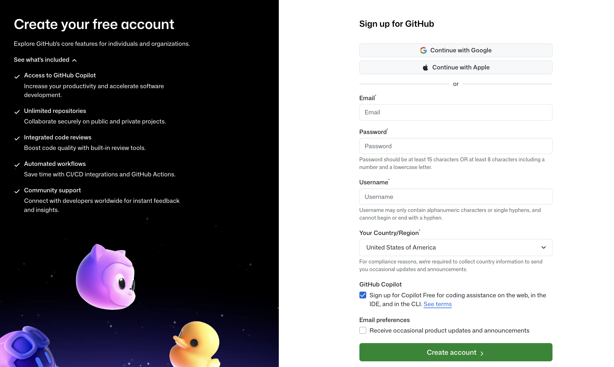
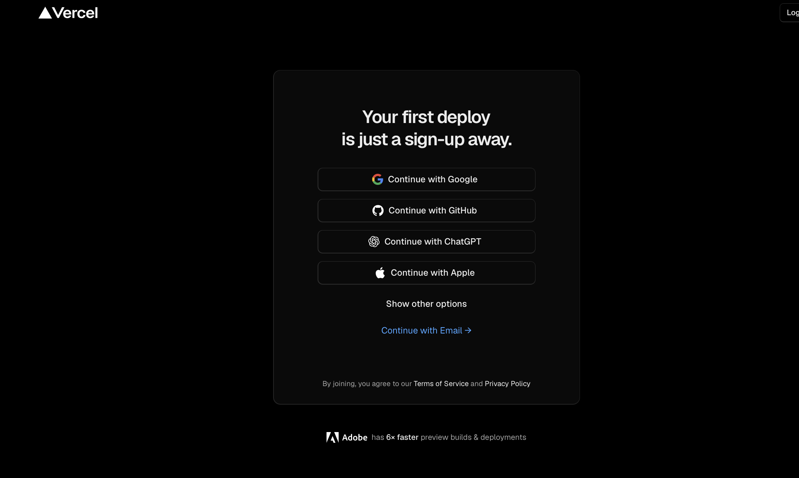
One rule about the free tier
Hobby is for personal, non-commercial projects. Learning, side projects and showing your family all qualify. The moment it becomes a business or a client's site, Vercel expects you on a paid plan.
Now ship it
Paste this in and follow along. Claude drives, you click.
What happens
- Claude pushes your project up to GitHub, and may ask you to log in once.
- You connect that GitHub project to Vercel in the browser.
- Vercel hands you a link ending in
.vercel.app. - Send it to somebody. Your work is running on a real server, available to anyone with the address.
If your link asks people to log in
That is Deployment Protection, which locks the page to your account. Visit vercel.com/dashboard, open your project, then Settings, then Deployment Protection, turn Vercel Authentication off, and save.
From this point forward
Say "commit and push this", wait a minute, and refresh your link. Vercel updates the live site on its own each time. You connect GitHub to Vercel once, and that connection keeps working indefinitely.
Secrets and superpowers
API keys, the .env file, and putting AI inside the thing you built.
What a secret is
Sooner or later your project will want to use somebody else's service: to send an email, take a payment, or ask an AI a question. Those services need to know the request is coming from you.
So they issue you an API key, a long random string that functions as a password:
An API key is a password with your credit card attached
If somebody else obtains yours, they use the service as you and the bill arrives at your door. There are bots scanning public code for leaked keys around the clock. This is not a hypothetical risk.
Where it belongs: a file called .env
.env is short for environment. It is a plain text file in your project folder holding your secrets, one per line:
Your code asks for OPENROUTER_API_KEY rather than containing the key itself. The key lives in one file and never appears in the code you share with anyone.
while your keys stay private.
.gitignore is what makes that true
Git records everything in your folder, a file full of passwords included, if you let it. .gitignore is a list of files Git should pretend it cannot see. Put .env in that list and your secrets never leave your computer, however many times you push.
The two-file convention
Projects often ship a .env.example listing the key names with no values, so the next person knows what to supply. That file is committed. The real .env never is.
Why the leading dot
A filename beginning with a dot is hidden by default on Mac and Linux, which is why you may not find it in Finder. VS Code displays it without complaint. Press ⌘+⇧+.Ctrl+H if you need to reveal hidden files elsewhere.
You do not have to create these by hand:
Obtaining a real key: OpenRouter
OpenRouter is a single door to hundreds of AI models, Claude and GPT and Gemini and open-source ones, all behind one key. It means the application you build can have AI inside it, not only the editor you build it in.
Do I not already pay for Claude?
You do, and that covers Claude helping you build. This key covers your application doing AI work for its own users. They are separate jobs. Your Claude subscription cannot power a website you built, any more than a Netflix account can power a cinema.
- Go to openrouter.ai and sign in. Google or GitHub is quickest.
- Click your avatar and choose Keys, or go straight to openrouter.ai/keys.
- Click Create Key and name it
test. - Set a spend limit on the key while you are there. A key capped at one dollar can cost you at most one dollar, even if your code falls into a loop at three in the morning. This is the most valuable habit in the section.
- Copy the key now, because it is shown only once. If you lose it, delete it and issue another.
- Paste it into your
.envfile. Not into a chat, not into a note, and not into your code.
On money, before you spend any
- Signing up is free and no card is required to look around.
- Some models cost nothing to use, usually marked with
:freein the name. Begin with those. - Paid models run on credit you add in advance. Add the smallest amount permitted. You cannot run up a bill against credit that does not exist.
- Check a model's price on openrouter.ai/models before you point your code at it rather than afterwards.
Build something with it
Choose one and paste it in. Claude will wire the key through from your .env.
"It works on my computer but not on the live site"
This is nearly always the explanation. Your .env deliberately never left your machine, so the deployed site has no key to read.
Visit vercel.com/dashboard, open your project, then Settings, then Environment Variables. Add the same name and value there and redeploy. The same secret, told to Vercel directly rather than travelling through GitHub. This is how professional teams handle it.
If you leak a key
Deleting the file is not sufficient, because Git remembers and the scanning bots move faster than you can undo. Go to the service, delete that key, and issue a new one. Thirty seconds of work and the leaked key becomes worthless. Most people do this at least once. The only real mistake is failing to revoke.
Your survival kit
Three rules that keep you safe
1. Never paste these into a chat
Passwords, API keys, secret tokens, database passwords, or real customer names, emails and card numbers. If a project needs a key, say: "Set this up as an environment variable so the key isn't in the code."
2. If it goes off the rails, say these in order
First "Stop. Don't change anything else." Then "Explain what you just changed, in simple words." Then "Undo that."
3. Small changes beat large ones
Make one change, look at the result, then commit it, and do that every time.
Your cheat sheet
Click to copy. These eight sentences will extract you from almost any hole you dig.
When you get stuck
Setup will not cooperate
I cannot find the Spark star in VS Code
Quit VS Code completely (⌘+Q, because closing the window is not enough)(and close it from the taskbar too) and reopen it. If it is still missing, press ⌘+⇧+PCtrl+Shift+P and run Developer: Reload Window. If nothing has changed, check that the Extensions panel lists Claude Code as Installed, published by Anthropic.
It says I need to sign in, or my plan will not work
Claude Code needs a paid plan: Pro, Max, Team or Enterprise. Check in your Claude billing settings that the plan is active, then sign out and back in inside VS Code.
Nothing is happening. It is sitting there.
Give it thirty seconds, since it thinks before it types and larger jobs take a minute. If it has truly frozen there is a stop button, so press that and send your message again. Failing that, run Developer: Reload Window. Your files are on disk, so nothing is at risk.
Do I need Node.js, Python or Homebrew?
Not to begin with. Claude will tell you when a project requires one and can install it alongside you. Resist installing things in advance, which is how beginners end up with four conflicting versions of the same tool.
Claude is behaving strangely
It edited my files without asking. Is that normal?
Yes. On a Pro plan it starts in Auto mode and proceeds with edits inside your project. The current mode is written at the bottom of the chat box.
If you would rather be consulted, click it and choose Plan, where it writes out its intentions and waits, or Manual, where it asks before each edit. Plan is a good choice for your first week.
It IS asking permission. Should I say yes?
Yes for creating or editing files inside your project folder, which is the job you gave it.
Ask first before deleting many files, working outside your folder, installing software, or sending anything to the internet. Type "why do you need that?" and nothing proceeds until you approve.
Everything broke and I have no idea what happened
Say: "Stop. Explain what changed in simple words, then undo it." If you committed beforehand, say "take me back to the last commit." This is the situation commits exist for.
There is alarming red text
Red is ordinary and usually a warning rather than a disaster. Copy the whole thing, paste it to Claude, and say: "I got this error. What does it mean and how do I fix it?" Professionals do exactly the same.
My change is not showing up
Refresh the browser (⌘+R)(Ctrl+R). If that fails, ask: "Which exact file should I open, and what's its full path?" You are most likely looking at a different copy.
Claude forgot what we were doing
Long conversations get trimmed and a new chat starts blank. Click Session history at the top of the Claude panel to reopen an earlier conversation. If you are starting fresh, describe what you are building in one line, since it reads your files regardless.
Keys, secrets and money
My site works locally but breaks when live
Nine times in ten this is a missing environment variable. Your .env never left your computer, which is the point of it. Add the same key names and values at vercel.com/dashboard, under your project, then Settings, then Environment Variables, and redeploy.
I think I leaked an API key
Do not panic and do not attempt to erase history. Go to the service that issued it, delete that key, and create a new one, at which point the leaked one becomes worthless. Then confirm .env is listed in .gitignore so it cannot happen twice.
How much does all of this cost?
Claude Pro at $20 per month, or $17 paid yearly. That is the only recurring bill.
VS Code, GitHub and Vercel Hobby are free. OpenRouter is free to join and offers free models, while paid ones run on credit you add in advance, so no surprises are possible.
A custom domain such as yourname.com costs somewhere around $10 to $15 a year and is entirely optional.
Can I use this for a business or a client's site?
The free Vercel Hobby plan is for personal, non-commercial use only. The moment it becomes a business, a client, or anything selling something, Vercel expects you on their paid plan. Learning and side projects are what Hobby exists for.
My shared link asks people to log in
That is Vercel's Deployment Protection, which is on by default and locks the page to your account. Correct it at vercel.com/dashboard, under your project, then Settings, then Deployment Protection, turning Vercel Authentication off.
Is my code private?
What you type and the files Claude reads travel to Anthropic's servers to be worked on, which is how the tool functions. Your GitHub repositories are private unless you choose to make them public, and Claude runs on your own machine against your own folder.
The rule that matters: never put real passwords, API keys, or real customer data into a project you are learning with. For the specifics, read Anthropic's privacy policy and review the privacy settings in your Claude account.
Returning tomorrow
I closed VS Code. Is my work gone?
No, it is saved in your folder. Open VS Code, choose File, then Open Recent, select your project, and click the Spark star to carry on.
Can I have more than one project?
Yes, one folder each, which is the entire system. Create a new folder, choose File then Open Folder, and Claude sees only that one. Never keep two projects in a single folder.
I hit my usage limit
Every plan refills every few hours. Wait it out or upgrade. Nothing is broken and your work is saved.
What is the terminal version, and do I need it?
The same Claude without buttons, where you type claude into a black text window instead. You may skip it indefinitely. If you are curious, open Terminal then New Terminal in VS Code, paste the line below, press Enter, and type claude.
A standing rule: never paste a command you found online without first asking Claude what it does.
Words people will say at you
Four-word definitions, which is as much as you need.
index.html is a file.Final exam
(Pass it and your certificate unlocks.)
Final exam
Eight questions drawn from across the twelve sections. Wrong answers cost you nothing, so guess freely. Pass and you graduate.
In vibe coding, whose job is it to type the code?
You are the director rather than the typist. Your work is describing clearly and checking the result.
Consider who holds the keyboard against who holds the vision.
Which step of the loop do people skip, to their own cost?
Looking is the one people abandon. Asking is enjoyable and repeating is easy, but opening the thing and confirming it works is the step that protects you.
Which of the four feels like a chore rather than a pleasure?
You search the extensions panel and find several results named Claude Code. Which do you install?
Check the publisher every time. Popular extensions attract imitations with near-identical names, and this habit will serve you for the rest of your career.
This is precisely how people install the wrong thing.
You have opened the folder test in VS Code. Can Claude change files in your Photos folder?
This is why the folder matters. Anything beyond it requires a deliberate, permission-asking step rather than happening by accident.
Recall why we described the folder as a safety net.
Claude proposes deleting a great many files and you were not expecting it. What do you type?
Ask before you approve, every time. Nothing proceeds without your agreement, and you learn something whenever you ask.
You have a voice in this. Neither panic nor blind trust is it.
When should you commit?
A commit is only useful if it exists before the disaster. Committing after the fire is not a fire escape.
A save point you create after you die is of limited value.
Where does an API key belong?
It never belongs in the code. Keep it in .env on your machine and in environment variables on the host, with .gitignore ensuring the first never travels.
Consider what gets uploaded the moment you push.
Honestly, now: must you understand every line of code your project contains?
And that is the course. Understanding is optional, looking is not. Go and build something.
Return to Section 1. What did we say the work consists of?
Your certificate
Pass the exam above and this unlocks.
What should you build next?
Choose something you want to exist. Click to copy a starting prompt.
The last piece of advice
Build the thing you keep wishing existed. It will be harder than any tutorial and you will learn ten times as much from it. You already know every step: ask, look, correct, commit, push.